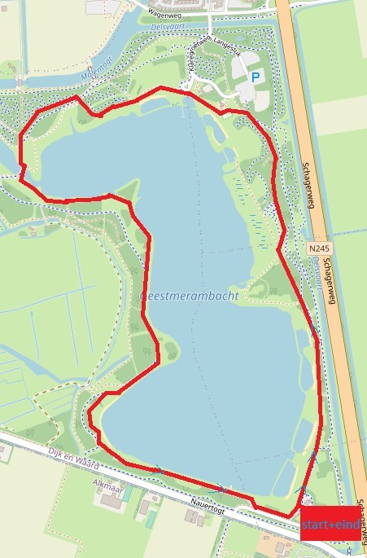

Centrum Alkmaar
Voor de eerste aanbevolen wandeling hebben we een rondje door het centrum van Alkmaar.De wandeling start op het station van Alkmaar. Deze wandeling is voldoende vriendelijk voor beginners, de wandeling duurt circa 45 minuten over 3,5 kilometer.
Er is van alles te zien op deze route zoals; de Sint-Laurenskerk, de oudegracht, de accijnstoren, monumenten als het huis met de kogel en het standbeeld van Truus Wijsmuller-Meijer,
ook het victoriepark komt op deze wandeling voorbij. Voor meer informatie over de verschillende dingen die je op te zien krijgt op de wandeling klik hier.

Heilooërbos
Het Heilooërbos is een prachtige plek om te wandelen, met veel mooie bospaden en weilanden, maar ook plekken met wat meer geschiedenis zoals de kattenberg en het landhuis van Nijenburg.Voor deze route bent u een uur aan de wandel over 4 kilometer, De paden worden goed begehouden en zijn dus niet lastig om over te wandelen.
Het startpunt van deze wandeling is het busstation kattenberg, de route is dus met het openbaar vervoer te bereiken.
Voor de wat fanatiekere wandelaar vanaf het centrum van Alkmaar tot het Heilooërbos is een wandeling van ongeveer 50 minuten. Voor additionele informatie en foto’s klik hier.

Duinvermaak
Wandeling door de duinen en het bos in Bergen is een hele leuke optie, op vele plekken zijn er prachtige uitzichten over de duinen te vinden en door de duinen zelf heenlopen komt ook voor op deze route. Doordat ook door de duinen wordt gelopen op deze wandeling is het terrein wat lastiger, meerdere keren zal u door het zand een aantal duinen op en af wandelen. De lengte van de wandeling is 1 uur en 15 minuten over 4,5 kilometer. Er is mogelijkheid om gratis te parkeren tegenover het restaurant ‘duinvermaak’. Voor meer informatie en foto’s: hier.